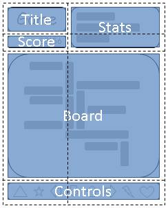
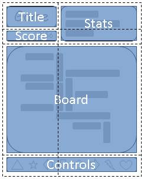

Desktop template

Landscape and portrait orientations
 

Do You still use DIV?

CSS Grid Layout Module Level 1

Virtual Grid
grid-template-columns: auto minmax(min-content, 1fr);
grid-template-rows: auto minmax(min-content, 1fr) auto;
Unit
- linear sizes
- percents
- fraction
- max-content
- min-content
- minmax(min, max)
- auto (minmax(min-content, max-content)).
Alignment and Spacing

Grid Area
#grid {
display: grid;
grid-template-areas: "title stats"
"score stats"
"board board"
"ctrls ctrls"
grid-template-rows: auto minmax(min-content, 1fr) auto;
grid-template-columns: auto minmax(min-content, 1fr);
}